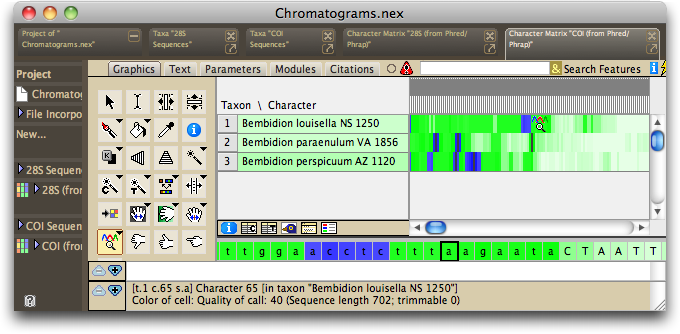

Troubleshooting the processing chromatogram files
Processing by Chromaseq/Phred/Phrap should yield output in Mesquite's log window that looks like this:
Phred Phrap processing of chromatograms as scripted by Mesquite
Processing directory: /ChromaseqExamples/Chromatograms
Using names and codes file: /ChromaseqExamples/SampleCodes.txt
Using primers file: /ChromaseqExamples/Primers.txt
Parameters: Phred Options: -id . -pd . -d
Phrap Options: -new_ace -qual_show 20 -vector_bound 0
Chromaseq Options:
Quality threshold for lower case: 49
Convert multiple-peaks sites to ambiguity codes: true
Minimum secondary peak fraction for ambiguity: 0.3
Trim low quality regions from ends: true
Quality threshold for trim: 20
Trim window length: 10
Trim window threshold: 5
---------------------------------------------------
Section 1: Examining chromatogram files and preparing directories
Preparing Bemb perspicuum AZ 1120 (COI)
Preparing Bemb louisella NS 1250 (COI)
Preparing Bemb louisella NS 1250 (28S)
Preparing Bemb perspicuum CA 2320 (28S)
Preparing Bemb paraenulum VA 1856 (COI)
Preparing Bemb perspicuum AZ 1120 (28S)
Preparing Bemb paraenulum VA 1856 (28S)
Number of files prepared: 7
---------------------------------------------------
Section 2: Renaming chromatograms for Phred and Phrap
A01_A01DNA1120_B1490_411940.ab1 renamed to DNA1120.b.B1490.ab1
A01_A01DNA1120_Bcoi2R_412036.ab1 renamed to DNA1120.g.Bcoi2R.ab1
C07_C07DNA1250_B1490_208508.ab1 renamed to DNA1250.b.B1490.ab1
C07_C07DNA1250_B2232_208604.ab1 renamed to DNA1250.g.B2232.ab1
C12_C12DNA1250_D3aR_572645.ab1 renamed to DNA1250.g.D3aR.ab1
C12_C12DNA1250_NLF184_572549.ab1 renamed to DNA1250.b.NLF184.ab1
F06_F06DNA2320_D3aR_552091.ab1 renamed to DNA2320.g.D3aR.ab1
F06_F06DNA2320_NLF184_551995.ab1 renamed to DNA2320.b.NLF184.ab1
H05_H05DNA1856_B1490_237723.ab1 renamed to DNA1856.b.B1490.ab1
H05_H05DNA1856_B2232_237819.ab1 renamed to DNA1856.g.B2232.ab1
H07_H07DNA1120_D1_394061.ab1 renamed to DNA1120.b.D1.ab1
H07_H07DNA1120_D3_394157.ab1 renamed to DNA1120.g.D3.ab1
H09_H09DNA1856_D1_237563.ab1 renamed to DNA1856.b.D1.ab1
H09_H09DNA1856_D3_237659.ab1 renamed to DNA1856.g.D3.ab1
---------------------------------------------------
Section 3: Execution of Phred-Phrap command file begun
.1. Bemb perspicuum AZ 1120 (Phred)
2. Bemb louisella NS 1250 (Phrap)
3. Bemb louisella NS 1250 (Phrap)
4. Bemb perspicuum CA 2320 (Phrap)
6. Bemb perspicuum AZ 1120 (Phred)
Phred & Phrap analyses completed.
---------------------------------------------------
Section 4: Mesquite processing of Phrap results
Processing ACE file: Bemb louisella NS 1250.ace
C12_C12DNA1250_D3aR_572645.ab1 (rev)
C12_C12DNA1250_NLF184_572549.ab1
Processing ACE file: Bemb paraenulum VA 1856.ace
H09_H09DNA1856_D3_237659.ab1 (rev)
H09_H09DNA1856_D1_237563.ab1
Processing ACE file: Bemb perspicuum AZ 1120.ace
H07_H07DNA1120_D3_394157.ab1 (rev)
H07_H07DNA1120_D1_394061.ab1
Processing ACE file: Bemb perspicuum CA 2320.ace
F06_F06DNA2320_D3aR_552091.ab1 (rev)
F06_F06DNA2320_NLF184_551995.ab1
Processing ACE file: Bemb louisella NS 1250.ace
C07_C07DNA1250_B2232_208604.ab1 (rev)
C07_C07DNA1250_B1490_208508.ab1
Processing ACE file: Bemb paraenulum VA 1856.ace
H05_H05DNA1856_B2232_237819.ab1 (rev)
H05_H05DNA1856_B1490_237723.ab1
Processing ACE file: Bemb perspicuum AZ 1120.ace
A01_A01DNA1120_Bcoi2R_412036.ab1 (rev)
A01_A01DNA1120_B1490_411940.ab1
========================
Section 5: Phred/Phrap processing report
Multi-read sequences obtained from the following genes and samples:
(28S) -- Bemb louisella NS 1250
(28S) -- Bemb paraenulum VA 1856
(28S) -- Bemb perspicuum AZ 1120
(28S) -- Bemb perspicuum CA 2320
(COI) -- Bemb louisella NS 1250
(COI) -- Bemb paraenulum VA 1856
(COI) -- Bemb perspicuum AZ 1120
========================
Processing of chromatogram files completed.
And then you should see, once Chromaseq is done with the processing, matrices containing your sequences, shown in Bird's Eye view, and colored green and blue to indicate quality scores, like this:

If your output does not look like this, you may have a problem.
| Symptom | Diagnosis and Solution |
| Sections 1 through 3 look fine, but Sections 4 and 5 contain only a WARNING. | 1. Phred or Phrap may have failed. Please check the output of the Terminal or Shell program that ran Phred and Phrap. If the line "Aligning reads to contigs ...Segmentation fault" appears in your output, then it is likely you have encountered the 64-bit bug in Phrap. Please contact Phil Green, the author of Phrap, explain the situation, and ask him for a copy of new beta version of Phrap. See the Installation page for more details about exactly what you should ask for. 2. You may need to modify the phredpar.dat file to accommodate the particular nature of the machine used to produce your chromatograms. See Preparing the Phred Parameter File. |
| In viewing a contig, you get a message that begins "Chromaseq detects many conflicts..." | For some reason, the registration system used by Chromaseq to link the based in your matrix to those in your contigs and reads was damaged. You might be able to repair it by choosing one of the items from the Chromatograms>Registration submenu. The first item (Recalculate Mappers (Less Complete)) is the least thorough, but the simplest; the third item (Force Reregistration) completely reinfers the registration using alignment tools, and thus is a bit more drastic; the second item is inbetween. We recommend that you choose the first, then second, then third, in that order, until your problem is solved. |